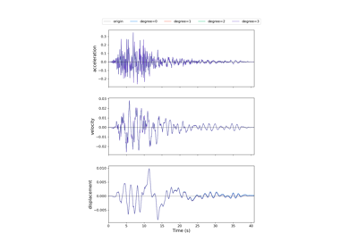

preprocessing
gmspy provides some functions to pre-process acceleration time-histories, including baseline correction, filtering, and resampling, etc.

sphx_glr_sphinx_gallery_examples_01preprocessing_plot_01_baseline_correction.py
Baseline Correction

sphx_glr_sphinx_gallery_examples_01preprocessing_plot_02_filtering.py
Filtering

sphx_glr_sphinx_gallery_examples_01preprocessing_plot_03_resample.py
Resampling

sphx_glr_sphinx_gallery_examples_01preprocessing_plot_04_lida.py
Linear Dynamic Time-History Analysis of SDOF System